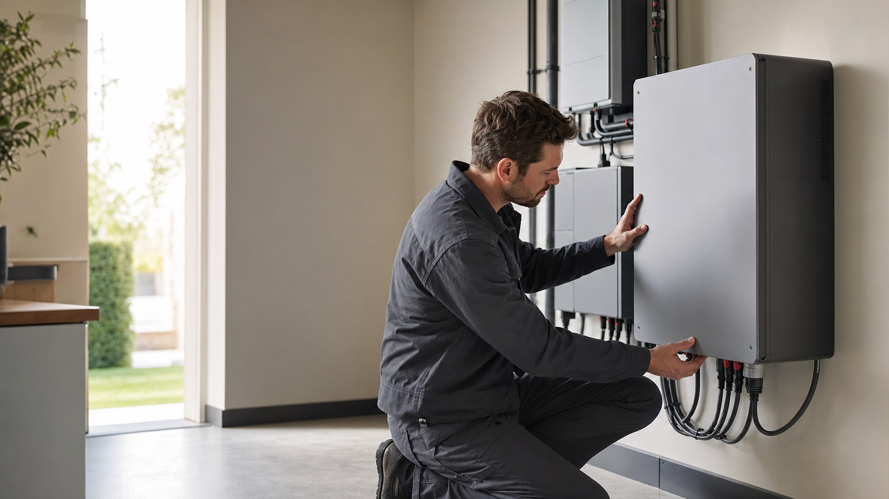

installateur hero
acf-v1-01-hero-01
- Specialisatie
- thuisbatterijen
- Stijl
- premium photorealistic editorial photography
- Ratio
- 16:9
- Checksum
- sha256:f3ca4784b06176396640490529b9913a286009eece8d25ebbc206797bd05b21e
Prompt
Use case: photorealistic-natural. Asset type: unlinked website hero candidate. Primary request: a skilled installer in neutral unbranded workwear carefully inspecting a generic modern home battery in a bright contemporary utility room. Style: premium photorealistic editorial photography. Composition: wide 16:9 horizontal frame with clear subject recognition and generous uncluttered negative space on the left. Lighting and mood: natural, credible, understated and sales-ready without claims. Color palette: warm white, graphite and muted sage. Constraints: no text, letters, numbers, captions or signage; no logos, trademarks, brand marks, watermarks or certification marks; no recognizable real company, branded uniform, branded vehicle or branded product; no performance claims, customer results, awards, reviews or before-and-after comparison; no malformed hands, extra fingers, impossible anatomy, unsafe tool use or unrealistic equipment; no readable screens, documents, labels, license plates or menus; no clothing graphics, symbols, letters or numbers.
Negative: no text, letters, numbers, captions or signage; no logos, trademarks, brand marks, watermarks or certification marks; no recognizable real company, branded uniform, branded vehicle or branded product; no performance claims, customer results, awards, reviews or before-and-after comparison; no malformed hands, extra fingers, impossible anatomy, unsafe tool use or unrealistic equipment; no readable screens, documents, labels, license plates or menus; no clothing graphics, symbols, letters or numbers